Sovereign Intelligence Brief · Deep Dive · Companion to the Consolidation Brief
From Compliance to Conviction
Bank Muamalat and the Shariah-authenticity question — what would actually have to change
for an Islamic mega-bank to be built on risk-sharing rather than on replicated debt, in what order, at what
capital cost, and how anyone could tell the difference.
The one-paragraph version
The industry that would be consolidated is roughly 90% debt-based in structure. Genuine
risk-sharing — mushārakah and muḍārabah — is a rounding error on the Malaysian book by narrow measure, and a
minority position by any measure. Scale will not fix that; scale entrenches it. The work is therefore not a
merger. It is a conversion, and the conversion has to start on the funding side, where deposit money is
a debt contract and investment-account money is not — because that is simultaneously the economically rational
fix for Bank Muamalat's own weakness (12% retail funding, 47% top-twenty depositor concentration). The capital
arithmetic is unforgiving: risk-sharing exposures attract materially higher regulatory risk weights, so each
RM1bn converted costs roughly RM450m of new equity at a 15% CET1 target. And the sequencing instruction matters
more than any product decision: convert first, scale second, because a debt-based balance sheet
gets harder to convert the larger it becomes.
~90%+
Debt-based structures share of the Islamic banking sector
New CET1 required per RM1bn of risk-sharing assets added, at 15%
0
Banks in Malaysia publishing maqasid impact indicators
Prepared: 15 September 2026 (UTC) · Classification: F13 sovereign intelligence product · Subject entity: Bank Muamalat Malaysia Bhd and the Malaysian Islamic banking sector
Produced by: i-ARIF (Hermes edge bridge) — computational output under F13 sovereign direction.
Standing qualification: This document is a structural, financial and institutional analysis of a
question that is partly doctrinal. It issues no fatwa and carries no religious authority. Where matters of
juristic ruling arise they are identified as such FIQH and referred to qualified
scholars. Nothing here is investment advice, a rating, or a price target.
The Executive Read
Ten findings, ordered by how much they should change the plan.
"Largest" and "authentic" pull in opposite directions under the current model. The industry
reached USD4.4 trillion and RM1.3 trillion domestically by replicating debt at scale. If a merged bank simply does
more of what made the sector big, it becomes the largest expression of the thing the question is trying to
escape. OBS
The gap is not rhetorical — it is measurable, and it is extreme. Commodity murabahah and
tawarruq are reported at "almost 90% or more" of the Islamic banking sector. Malaysian risk-sharing financing
measures between roughly 0.36% and 0.87% on narrow definitions, or up to 10–15% on broad ones.
OBS
Bank Muamalat's founding book is debt-based by construction. Home financing 33.51% and
personal financing 28.6% of gross financing — home financing and Ar Rahnu both structured on tawarruq. Nothing in
the current mix is a genuine profit-and-loss-sharing exposure of scale. OBS
The single most important move is on the funding side, not the asset side. 90.2% deposit
funding means the bank carries the loss; investment accounts place it where the contract puts it. Converting
funding from deposit-led to investment-account-led is simultaneously the doctrinally coherent move and the
commercially rational fix for the 12%-retail / 47%-top-twenty-concentration problem. Doctrine and economics
converge here — and almost nowhere else. INT
The regulator is already moving in this direction, publicly. BNM's 2025 annual report states
that long-horizon, cashflow-uncertain activities "cannot rely on traditional debt alone", and in September 2025 it
launched i-CITA with RM100 million of matching funds specifically to promote wider use of muḍārabah and
mushārakah. This is not a fringe position. OBS
The global standard-setter has named the problem in 2026. The IFSB's 2026 stability report
(May 2026) is titled around "hybrid risks" — products and balance-sheet configurations that "increasingly mimic
conventional banking characteristics". A bank claiming authenticity is claiming to solve something the regulator's
own research arm says is unsolved. OBS
Capital is the real constraint, and the risk weights are why. Mushārakah and muḍārabah
exposures are reported in the literature as attracting capital risk weights up to 400%, against far lower
treatment for debt-based financing. Each RM1bn shifted adds roughly RM3bn of RWA and, at a 15% CET1 target, about
RM450m of new equity. From CET1 of 12.02% and equity of RM3.23bn, this is a RM1.5–4.5bn question depending on
scale and calibration. DER
Choose the standard, and accept the bill. Malaysia's Shariah Advisory Council accepts
organised tawarruq and bay' al-'inah; the OIC Fiqh Academy (2003) and AAOIFI reject them. Both positions are
legitimate scholarly positions. A bank that claims to be built on "real Islamic teaching" must state which
standard it holds — and if the stricter one, must accept the commercial cost of that choice openly.
FIQH
Sequence beats sincerity. Three of the four most likely failure modes are capital and
marketing failures, not doctrinal ones. The instruction that matters most is to convert before scaling: a larger
debt-based book is harder to convert, not easier. INT
Bank Muamalat already owns three assets most banks would have to buy. Automatic zakat
deduction on the Gold-i account at haul and nisab, first-in-the-world GABV membership for an Islamic bank, and
Shariah training capability in waqf, zakat and sadaqah. The social-finance engine is cheaper here than
anywhere else in the market. OBS
Read this before the analysis. This brief separates two things that are usually blurred.
Doctrinal questions — which contracts are permissible, which are preferred, what a given ruling should be —
belong to qualified scholars and Shariah committees. This document takes no position on them and issues no fatwa.
Structural questions — what share of a balance sheet is risk-sharing, what it costs in capital, what the
funding mix is, what governance can be verified, what social infrastructure exists — are observable and
measurable, and this document answers those. The value here is that the second set of questions determines whether
the first set can ever be expressed in an institution rather than in a statement.
§0 Scope, Method, Limits
What this answers
Given the stated ambition — the largest Islamic bank, fully Shariah-compliant, built on authentic Islamic
teaching — what would Bank Muamalat actually have to do? In what order? At what cost? And how would anyone,
inside or outside, be able to tell whether it was real?
What this refuses to do
Not issue religious rulings. Contract permissibility is marked FIQH and left to
scholars; the Shariah Advisory Council framework is treated as the governing authority in Malaysia, which it is
in law.
Not characterise the Malaysian SAC position as illegitimate. The divergence from AAOIFI and Gulf bodies is
a documented juristic difference of long standing, and both are defensible within their own methodology.
What matters for this brief is that the difference exists, because a claim of authenticity has to
locate itself relative to it.
Not attribute motive to any shareholder, board or management. Outcomes and disclosed positions only.
Not give investment advice.
Method
Primary: Bank Negara Malaysia Annual Report 2025 (Islamic finance chapter); BNM Tawarruq policy document
(reissued December 2018); BNM Shariah Resolutions; BNM Investment Account discussion papers; IFSB Islamic
Financial Stability Report 2026; Bank Muamalat Pillar 3 disclosures (1H June 2026) and Annual Report FY2024;
MARC and RAM rating actions.
Secondary: peer-reviewed and working-paper literature on profit-and-loss-sharing proportions in Malaysia
and globally; OIC Fiqh Academy 17th session (2003); AAOIFI standards; Kuala Lumpur Declaration.
The capital sensitivity is derived from disclosed BMMB figures (equity, CET1 ratio) combined with the
risk-weight treatment reported in the literature, and is presented as a sensitivity rather than a forecast.
Limits acknowledged
Bank Muamalat does not publish a contract-level breakdown of its financing book, so the
current risk-sharing share is estimated from book composition and product structure rather than read directly.
Where an estimate is used it is marked as such. The risk-weight treatment of equity-based financing varies by
framework and calibration; the 400% figure is drawn from the literature and used to show direction and magnitude,
not as a claim about the current exact regulatory schedule.
§1 Tersurat — The Gap, Stated Plainly
1.1 The industry's structural profile
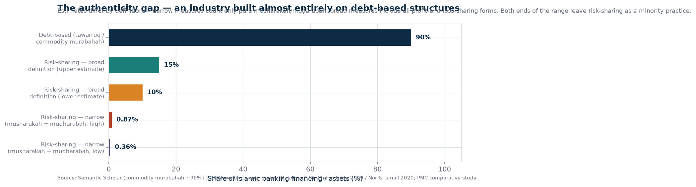
The number to hold in mind is ninety per cent. The Islamic banking industry globally and in Malaysia is
overwhelmingly composed of structures whose economic substance is a fixed obligation — commodity murabahah and
organised tawarruq. Profit-and-loss-sharing, the contractual form that distinguishes Islamic finance in theory,
is a small minority in practice. OBS
This is not a secret and it is not a conspiracy. It is the outcome of three decades of choices made for
defensible reasons: risk-sharing is capital-expensive, legally complex, harder to originate, harder to securitise
and harder to regulate. It is also, in the literature's own words, "statistically indistinguishable" in return
profile from conventional lending. OBS The industry solved for scale and paid for it
with distinctiveness.
1.2 Bank Muamalat's own book
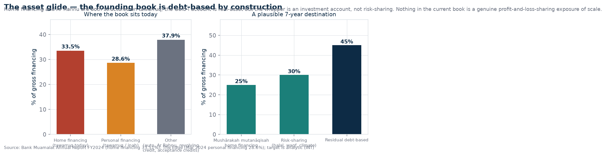
Book segment
Share
Contract structure today
Home financing
33.51%
Debt-based (tawarruq-family structures). The largest single block of the book and the clearest symbolic conversion target. OBS
Personal financing
28.6%
Debt-based. Where tawarruq adds least economic value and attracts the most criticism. OBS
Other (auto, Ar Rahnu, revolving credit, acceptance credits)
≈37.9%
Ar Rahnu is explicitly structured on tawarruq; acceptance credits and revolving credit are debt-form by nature. OBS
Real-asset offerings
small
The Gold-i account is genuine real-asset exposure, but the wrapper is an investment account rather than a risk-sharing exposure. Its distinctive feature — automatic zakat deduction at haul and nisab — is governance, not structure. OBS
The uncomfortable reading. Roughly 62% of Bank Muamalat's gross financing sits in the two
segments where the contract form is least distinguishable from conventional lending, and a meaningful further slice
is debt-form by nature. If authenticity is the objective, the honest starting position is that the bank is
structurally a conventional lender in Islamic legal clothing for the bulk of its book. That statement is
uncomfortable, and it is also the only starting position from which a real programme can be built — because a
baseline that flatters the institution produces a programme that never has to change anything.
INT
§2 What "Authentic" Means Structurally
The word authentic is unusable in a plan until it is translated into properties that can be counted. This section
does that translation — not theologically, but institutionally. Four properties recur across the scholarly and
regulatory literature as the distinguishing marks of an Islamic financial institution rather than an Islamic
labelled one.
Property
What it means institutionally
How it is observed
Risk-sharing
The principle asserted in the Kuala Lumpur Declaration — that risk-sharing is a salient characteristic of
Islamic financial transactions, and that liability is inseparable from the right to profit. Institutionally:
a material share of the book where the funder can lose capital.
Share of financing in mushārakah / muḍārabah forms; published contract-level breakdown.
Real-asset linkage
Finance attached to identifiable assets, goods, services or usufruct rather than to money creating money.
Institutionally: the bank's exposure is traceable to something that exists.
Asset-linkage ratio; composition of exposures by underlying asset class.
Loss-bearing funding
The party supplying funds accepts loss. Deposit money cannot do this; investment-account money can.
Institutionally: the funding base is investment-led, not deposit-led.
Investment accounts as a share of total funding; profit-sharing ratio disclosure.
Maqasid consequence
Whether the institution's activity demonstrably serves the objectives of Shariah — equitable distribution,
real economic participation, protection of the vulnerable. This is the property the industry measures least.
Published, third-party-verified maqasid indicators; social-finance volumes; qardhul hasan book.
Where the juristic divergence sits. Malaysian practice accepts organised tawarruq where the
Shariah Advisory Council has permitted it under specific rules and parameters (policy document reissued December
2018), and accepts bay' al-'inah. The OIC Fiqh Academy's 17th session (2003) regarded organised and reverse
tawarruq as impermissible, and AAOIFI's standards are more restrictive than Malaysian practice. Both frameworks
are internally coherent; they differ on method and on how strictly form must track substance.
FIQH
The structural consequence for this brief is narrow and does not require taking a side: an institution that
describes itself as built on "real Islamic teaching" is describing itself against the stricter reading, whether or
not it says so. It should say so, and it should publish what it costs. That is transparency, not a ruling.
§3 The Regulatory Reality in 2026
The most important thing to understand about this question is that the regulator and the global standard-setter
moved first. A bank pursuing authenticity in 2026 is not fighting the framework; it is moving with it, and can say
so.
Actor
Position as of 2026
Status
Bank Negara Malaysia
Islamic financing rose to 48% of total financing and takaful participation to 24.5%. BNM states plainly that
activities with longer horizons and unpredictable cashflows "cannot rely on traditional debt alone", and that
equity-based contracts may be a better fit. In September 2025 it launched i-CITA with RM100 million of matching
funds specifically to promote wider use of muḍārabah and mushārakah, aimed at food security and climate
resilience. In 2024, institutions intermediated RM148.6bn into value-based-intermediation activities.
Actively promoting OBS
IFSB
Its 2026 stability report (26 May 2026) is devoted to "hybrid risks" — new products and balance-sheet
configurations that "increasingly mimic conventional banking characteristics" in ways that reshape risk profiles
and are not always captured by existing prudential frameworks. It calls for capital frameworks that adequately
capture these risks.
Naming the problem OBS
Investment Account framework
Malaysia has an established investment-account framework and platform, and BNM is currently reviewing
industry feedback on the Shariah Contract Framework and Investment Account discussion papers to give clearer,
more practical guidance.
Framework exists, being refined OBS
Shariah Advisory Council
Publishes Shariah resolutions and a tawarruq policy document with mandatory requirements ensuring validity.
In law, the SAC's rulings are the binding reference for Islamic financial business in Malaysia.
Governing authority OBS
OIC Fiqh Academy / AAOIFI
Stricter on organised tawarruq and related structures; AAOIFI standards are not the primary reference in
Malaysian practice, where SAC rulings prevail.
Divergent but authoritative elsewhere FIQH
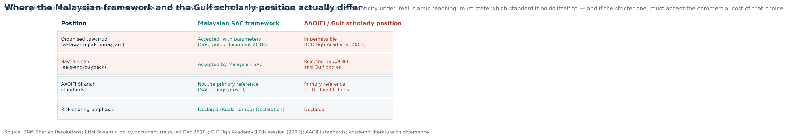
The strategic implication. There is a genuine policy tailwind here, and it is unusual. BNM has
put money behind risk-sharing promotion; the IFSB has published a flagship report naming the imitation problem.
That means a bank that launches a serious conversion programme in 2026 is not proposing something eccentric — it
is answering a call the framework has already made, with its own money, and can cite its regulator doing so.
Very few institutional transformations get that cover. If the ambition is real, this is the window in which to
make it, because the cover will not be there indefinitely. INT
§4 What Bank Muamalat Would Have To Do — Five Moves, In Order
Move 1 — Doctrine lock: establish the baseline before touching anything
The first deliverable is not a product, a partner or a capital raise. It is a published baseline. Four items:
The contract-level breakdown of the existing book. What percentage of gross financing is in
risk-sharing forms, what is debt-based, and what is by nature debt-form. Bank Muamalat does not currently publish
this. Publishing it is uncomfortable and it is the only honest starting line.
A stated standard. Which framework the bank holds itself to — Malaysian SAC practice, AAOIFI,
or a documented hybrid — and what that choice costs in forgone product range. Naming the cost is the credibility
test; a standard with no cost attached is not a standard.
A maqasid statement with indicators. Which objectives the bank will be measured against
(equitable participation, real-asset ownership, access for the excluded), and how each will be measured. On the
evidence of this research, no Malaysian bank publishes this today. VOID
A Shariah audit charter naming an external auditor, the reference standard, the audit scope,
and the reporting line. Not an internal review.
Why this comes first. Every subsequent move is a claim about improvement, and improvement is
unmeasurable without a baseline. More practically: publishing a bad number costs less at the start, when the
institution is small and the programme is new, than at the end, when the whole claim rests on it. The banks that
avoid this step are the ones that end up with a programme nobody can audit.
Move 2 — Funding side first, and this is the whole game
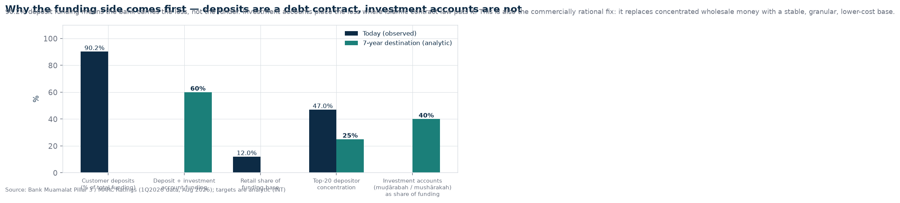
This is the move that almost every commentary gets wrong, because commentary is fixated on lending products.
The structurally Islamic side of a bank is not what it lends — it is who bears the loss on the money it lends
with.
A customer deposit is a guarantee of principal. The bank carries the risk; the depositor does not. That is a debt
contract, and at 90.2% of total funding it defines Bank Muamalat's structure regardless of what happens on the asset
side. OBS An investment account is different in kind: the account holder is rab
al-māl, shares in the profit under an agreed ratio, and — this is the point — absorbs loss. Converting the funding
base from deposit-led to investment-led is the single change that alters what the institution fundamentally is.
And here the doctrine and the spreadsheet agree, which almost never happens. Recall the commercial
problem identified in the companion consolidation brief: Bank Muamalat has only 12% retail funding, a 47%
concentration in its top twenty depositors, and 90.2% deposit dependence — an expensive, fragile, wholesale-weighted
funding base that compresses margin. Investment accounts sourced through retail channels are granular, longer-dated
and cheaper, because the holder is paid a share of actual profit rather than a promised rate.
So the most doctrinally coherent action available is also the most commercially valuable one. A bank that converts
its funding base is doing the right thing by the contract and fixing its cost of funds in the same transaction.
There is no tension to manage here. That is rare enough to be worth building a strategy on.
INT
Target: investment accounts from a side product to the primary funding instrument — above 40% of
total funding within five to seven years. INT Three conditions have to be built for
this to work rather than to backfire:
Investors must understand they can lose capital. This is a disclosure and conduct obligation,
not a marketing line. Mislabelling investment accounts to retail customers to grow the number faster would be the
worst possible outcome — it converts a doctrinal improvement into a consumer-protection failure.
Profit-sharing ratios must be disclosed honestly, not smoothed to look like a deposit rate.
Smoothing defeats the purpose and is detectable in the ratio history.
Maturity and liquidity must suit the assets. Investment accounts funding long-dated
risk-sharing assets is coherent; using them to fund short-cycle lending reintroduces a mismatch that the
framework is not designed for.
Move 3 — The asset glide, flagship first
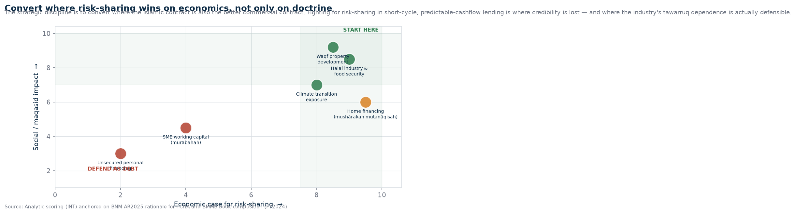
Convert where the risk-sharing contract is also the better commercial contract. Converting where risk-sharing is
economically inferior produces a subsidy, and subsidies get cut the first time earnings disappoint.
Home financing — the flagship. One-third of the book, and the most visible single product a
household ever signs. The shift from tawarruq structures to mushārakah mutanāqisah — diminishing
partnership — is the clearest possible public statement that the model has changed, because the customer can see
it: the bank owns part of the house and gradually sells its share. The reasons Islamic banks are reluctant are
well documented and real: higher capital weight, legal and valuation complexity, and difficulty in a default.
Those are costs to be paid deliberately, not obstacles to be avoided.
Sectors where uncertainty makes partnership superior. Halal industry and food security, and
waqf property development. Both have long horizons and cashflows that are genuinely unpredictable — precisely the
condition under which BNM itself says debt is unsuitable and equity-based contracts are a better fit. Climate
transition exposure belongs in the same list. i-CITA exists for exactly this purpose and should be used as a
funding and signalling channel.
Where to leave as-is, and say so. Short-cycle working capital and predictable-cashflow
lending is where debt-form contracts perform a legitimate function. The disciplined position is to convert there
last, disclose that choice, and defend it — rather than attempting a wholesale migration that would either fail or
be faked.
Target: risk-sharing at 20–30% of financing over seven years, with a majority of new
home originations on mushārakah mutanāqisah by year five. Stated as a target, reported quarterly, audited
externally. INT
Move 4 — Governance: the part that decides whether any of it is real
Everything above can be performed convincingly for a period without being true. Governance is the property that
makes performance falsifiable. Four requirements:
Requirement
Current position
What has to change
Shariah Committee independence
Six members, board-appointed and renewed, chaired by Dr. Yusri Mohamad. OBS
Fixed non-renewable terms for a portion of members; appointment process not controlled by management; explicit, exercised power to veto or withdraw a product line.
Published fatwa rationale
Resolutions not published with reasoning. VOID
Every material product approval published with the reasoning and any dissent. This is the cheapest credibility purchase available and nobody in the market makes it.
External Shariah audit against a named standard
Malaysian practice relies on SAC rulings as the governing reference. OBS
Engage an external auditor against AAOIFI or an equivalently strict standard, publish the report, and accept the uncomfortable findings in it.
Non-compliance income routing
Disclosed in aggregate under Pillar 3. OBS
Full disclosure of amount, source and destination — channelled to qardhul hasan, charity or social programmes, with a published annual reconciliation.
The ownership-concentration warning, and it is a warning from the regulator's own research.
The IFSB's 2026 stability report documents an Islamic banking crisis in which, in its own words, a single business
group acquired controlling stakes in five of ten full-fledged Islamic banks through multiple entities under common
control. That is a governance failure, not a doctrinal one, and it happened at scale.
OBS
Any consolidation that increases family or single-group control over an Islamic bank moves along the same axis.
The buffer is governance that does not depend on the owner's good judgement — independent committee terms,
published reasoning, external audit, published non-compliance routing. Those four things are what make an
institution able to say no to its own controlling shareholder, and that is the only sense in which governance here
is real rather than decorative.
Move 5 — Social finance as infrastructure, not as CSR
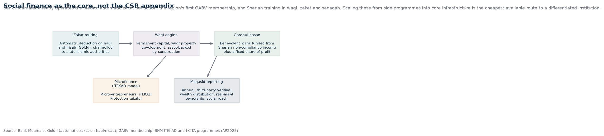
This is where Bank Muamalat has a genuine and under-used head start, and where the cheapest differentiation
lives. It is already the first Islamic bank in the world and the first bank in Southeast Asia to join the Global
Alliance for Banking on Values. Its Gold-i account automatically deducts zakat once the holding reaches haul and
nisab and remits to the Islamic authorities. It has existing Shariah training capability spanning waqf, zakat and
sadaqah. OBS
The move is to take the pieces it already owns and scale them into core infrastructure:
A waqf engine. Permanent capital, waqf property development, asset-backed by construction.
This is the structural answer to the criticism that Islamic banks hold no real assets — build the book that
does.
Zakat routing at regional scale, which the Gold-i account already demonstrates at small
scale, extended to the whole retail base.
Qardhul hasan — benevolent loans without return — funded from Shariah non-compliance income
plus a fixed share of profit, and sized visibly enough that it is a number, not a gesture.
Microfinance on the iTEKAD model, including protection takaful for micro-entrepreneurs.
Maqasid reporting, third-party verified, covering wealth distribution, real-asset ownership
and social reach.
A bank that publishes verified maqasid indicators alongside its financial statements is making a claim no
competitor currently makes, and it is a claim that gets harder to fake every year it is repeated.
§5 The Capital Arithmetic — What Authenticity Costs
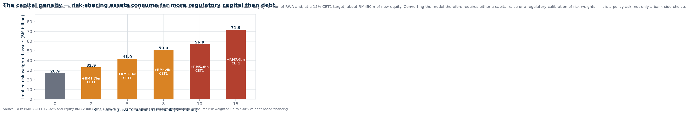
This is the section that turns an aspiration into a decision. Risk-sharing is not merely harder to operate than
debt-based financing. It consumes far more regulatory capital, because the bank is holding an equity-type exposure
rather than a receivable.
The literature reports mushārakah and muḍārabah exposures attracting capital risk weights up to 400%, against
substantially lower treatment for debt-based financing. OBS Applying that to Bank
Muamalat's disclosed position — CET1 of 12.02%, shareholders' equity of RM3.23bn, implying risk-weighted assets of
roughly RM26.9bn DER — gives a simple and uncomfortable relationship:
each RM1bn of financing converted to risk-sharing adds approximately RM3bn of risk-weighted assets and, at a
15% CET1 target, roughly RM450m of new equity.DER
Conversion scale
Implied RWA
New CET1 needed at 15%
RM2bn risk-sharing added
≈RM32.9bn
≈RM1.7bn (from RM3.23bn equity → RM4.9bn)
RM5bn added
≈RM41.9bn
≈RM3.0bn
RM8bn added
≈RM50.9bn
≈RM4.4bn
RM10bn added
≈RM56.9bn
≈RM5.3bn
Derived. Illustrative sensitivity, not a forecast: it holds the asset base constant, assumes a flat
400% risk weight on converted exposures, and takes 15% CET1 as the target. Actual required capital depends on the
prevailing regulatory schedule, the portion of the exposure the bank retains, and collateral and guarantee
mitigants.
Three honest conclusions from this arithmetic.
First, the capital penalty is the single largest structural reason Islamic banks avoid risk-sharing
— larger than product complexity, larger than legal risk, larger than customer demand. Any serious conversion
programme is therefore partly a regulatory programme: arguing, with the IFSB's own 2026 findings as
support, for a capital treatment that recognises that equity-based financing is being penalised relative to the
debt-based structures the standard-setter has publicly described as hybrid-risk imitations.
Second, this is the price of the claim, and it should be stated as a price. A RM1.5–4.5bn capital
requirement is the difference between an authenticity strategy and an authenticity campaign. A bank that will not
find the equity has not decided to convert; it has decided to talk.
Third, it is affordable once, not twice. The capital has to be raised while the institution is
small. Attempting it after a merger at RM110bn scale multiplies both the amount and the political difficulty.
INT
§6 Sequence, and the Merger Question
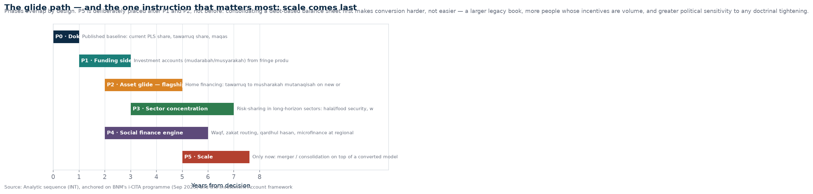
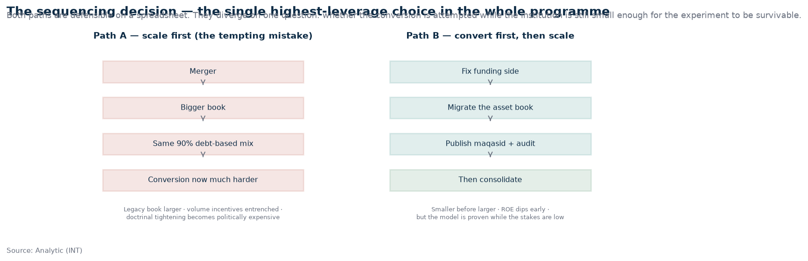
The most important instruction in this document: convert first, scale second.
Every instinct in a consolidation story says the opposite — get big, then reform from strength. On this specific
question the instinct is backwards, for three concrete reasons.
One. A larger debt-based book is a larger conversion problem, not a better-funded one. After a
merger the legacy mix is roughly what it was, weighted toward whichever partner's book was bigger, and the
conversion now has to be done across two underwriting cultures, two legacy systems and a combined branch network.
Two. Scale entrenches the incentive structure that produced the mix. A RM110bn bank is measured by
volume, ROE and market share, quarterly. Every one of those measures rewards the debt-based engine and penalises
a risk-sharing book that earns less, consumes more capital and takes longer to season. Once that measurement
regime is in place, the conversion programme is competing against the institution's own performance management.
Three. A merger is a political event, and after it every doctrinal tightening becomes politically
expensive. "You are shrinking the national champion" is a harder sentence to answer than "you are shaping a bank".
INT
6.1 The paradox worth holding
The companion brief found that Bank Muamalat is unsellable in practice — 18 years of an unmet pare-down condition,
10 failed attempts, one closed transaction in the entire lineage. It also found that the bank is 32.1% of its
parent's pre-tax profit and worth more than the parent's entire market capitalisation, which is the reason the
pare-down never happens.
For this question, that deadlock reads differently. The only structural feature that makes a
risk-sharing conversion survivable is precisely the feature that makes the bank unsellable: a controlling owner who
can accept a lower return for ten years. A listed bank answering to quarterly expectations cannot run this
programme. An EPF-controlled institution with a statutory annual distribution obligation cannot run it. A
state-owned vehicle exposed to political cycles cannot run it easily. A family holding company that has already
demonstrated, across eighteen years, a willingness to hold an underperforming banking asset rather than sell it at
a price it dislikes, can. INT
That is a genuinely counter-intuitive finding, and it cuts against the instinct to read the deadlock purely as a
failure. It may be the one condition under which the conversion is possible at all.
6.2 If a merger proceeds anyway — three conditions
Control must sit with the party that can hold a long horizon and pay for it. That means
accepting a lower near-term ROE explicitly, in the transaction documents, not in a press release.
The partner's book must not be predominantly tawarruq, or the exercise consolidates the
replica rather than converting it. This should be a due-diligence criterion, stated publicly, not an afterthought.
Capital must be committed at announcement, not at some later point conditional on
performance. A risk-sharing balance sheet needs loss-absorbing equity from day one; a conversion funded on the
promise of future capital is a conversion that will be reversed in the first bad quarter.
§7 Failure Modes — How This Usually Ends
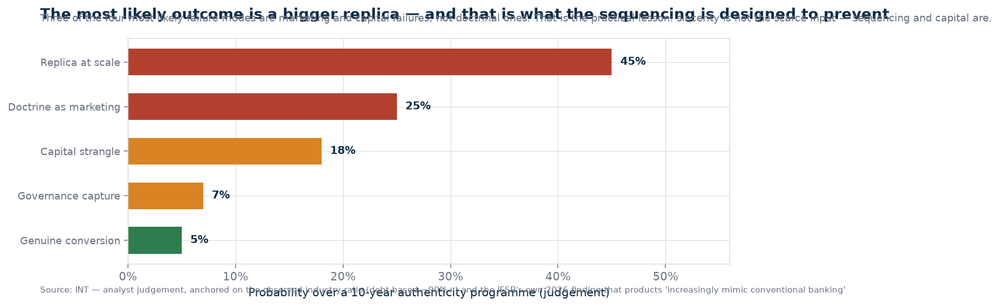
Failure mode
Prob.
Mechanism and the tell that would reveal it early
Replica at scale
45%
Announced as an Islamic mega-bank; the book stays debt-based; the label grows and the substance does not. Tell: no published contract-level baseline within the first year — because publishing it would expose the starting position. INT
Doctrine as marketing
25%
Risk-sharing launched as flagship products while the balance sheet mix is unchanged. Tell: targets expressed in products launched and awards won rather than in share of financing, and no third-party audit. INT
Capital strangle
18%
The mix genuinely shifts, but equity is not raised to match. Growth stalls, ROE disappoints, the programme is reversed on financial grounds within two years. Tell: risk-sharing share rising while the capital plan is unchanged. INT
Governance capture
7%
Committee becomes advisory in form: rationale unpublished, independent members not renewed, product veto theoretical. Tell: a product launched against a minority committee view with no disclosure of the dissent. INT
Genuine conversion
5%
Funding converted, home financing migrated, maqasid verified — a genuinely different institution, earning less, measuring differently, and able to prove it. INT
The highest-value observation in this table. Three of the four likely failure modes are capital
and marketing failures, not doctrinal ones. That means the scarce inputs are not sincerity, scholarly support, or
even demand — they are sequencing discipline, capital, and the willingness to publish unflattering numbers.
This is an execution problem wearing religious clothing, and it should be planned as one.
§8 How Anyone Would Know It Is Real
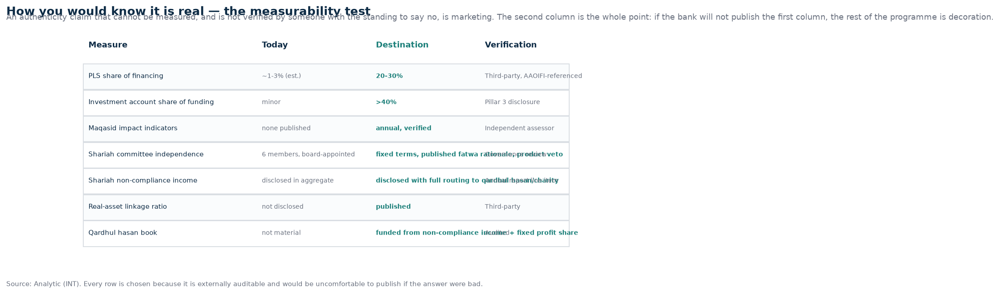
An authenticity claim that cannot be measured, and is not verified by someone with the standing to say no, is
marketing. Each measure below is chosen because it is externally auditable, comparable over time, and would be
genuinely uncomfortable to publish if the answer were bad. That last property is what makes it a measure rather
than a metric.
Measure
Today
Destination
Why it survives audit
Risk-sharing share of financing
~1–3% (estimated)
20–30%
Computable from the financing note in the accounts. Hard to manipulate without misclassifying contracts, which an external Shariah auditor would catch.
Investment accounts as share of funding
Minor
>40%
Already a Pillar 3 line item. The directional change is unambiguous and visible quarter to quarter.
Maqasid impact indicators
None published VOID
Annual, third-party verified
The indicator set and methodology are published in advance, so the result cannot be chosen after the fact.
Shariah Committee independence
6 members, board-appointed
Fixed terms, published rationale, exercised veto
Observable from governance disclosures and the record of products withdrawn or declined.
Shariah non-compliance income routing
Aggregate disclosure
Amount, source, destination, reconciled annually
Traceable to receiving institutions. An aggregate line cannot hide a routing decision.
Real-asset linkage ratio
Not disclosed VOID
Published
Directly addresses the substantive criticism of the industry and is independently verifiable from the exposure notes.
Qardhul hasan book
Not material
Funded from non-compliance income + fixed profit share
A balance sheet number with a disclosed funding source. Gestures do not produce balances.
§9 Falsification and Monitoring
Claim in this brief
What would disprove it
The binding constraint on risk-sharing is capital treatment, not demand
Evidence of substantial unmet retail or corporate demand for mushārakah-based products at prevailing pricing, or a bank converting successfully without additional equity. If demand is the real constraint, the sequencing changes materially.
Deposit-to-investment-account conversion is the highest-leverage single move
A bank that converts its asset book to risk-sharing while leaving funding deposit-led, and sustains it. That would show the funding side is less decisive than argued here.
Converting before scaling is materially easier than after
A post-merger conversion executed successfully at scale with the legacy mix intact. There is no recent example; if one appears, this instruction should be revisited.
No Malaysian bank publishes maqasid indicators
A published, third-party-verified maqasid report from any licensed Malaysian Islamic bank. This is a factual claim with a short shelf life and should be re-tested annually.
Family control is a comparative advantage for a long-horizon conversion
A listed or EPF-controlled Islamic bank executing a sustained multi-year risk-sharing conversion. That would show the horizon argument is not binding.
Monitoring list
BNM Annual Report and Financial Stability Review — any change to risk weights or capital treatment for equity-based financing. This is the single most important watch item. OBS
BNM Investment Account and Shariah Contract Framework policy documents — the ongoing review outcome will define the space available. OBS
i-CITA deployment — how much of the RM100m matching facility is actually drawn, and by whom. Deployment is the evidence that risk-sharing demand exists at scale. OBS
Bank Muamalat's annual report and Pillar 3 — investment accounts as a share of funding; any published contract-level breakdown; Shariah Committee terms and composition. OBS
IFSB publications — whether the 2026 hybrid-risk finding converts into standards or guidance. OBS
The single best tell: whether Bank Muamalat ever publishes the contract-level breakdown of its own book. Nothing else in this document is as diagnostic. A bank serious about authenticity will publish it early and at its worst. INT
§10 The Counter-Narrative — The Case for Tawarruq Pragmatism
Mandatory falsification of my own framing. Here is the strongest version of the opposing case, stated properly.
"The Malaysian SAC position is a legitimate scholarly position, and this brief is smuggling a
preference in as an analysis." Partly fair. This brief takes no fatwa position, but it does treat
risk-sharing share as the measure of authenticity, which is itself a choice. A scholar could reasonably argue
that a bank fully compliant with the SAC framework — including tawarruq under its published parameters — is fully
Shariah-compliant, full stop, and that measuring "authenticity" by contract mix is a modern and arguably
economistic framework imposed on a juristic question. FIQH Response: accepted, and that is why the brief frames this as the institution's stated ambition
rather than as an objective ranking. If the ambition is stated as "the largest Islamic bank, fully compliant", the
tawarruq-heavy path closes it. If the ambition is "risk-sharing", the path above is required. The brief is honest
about which ambition it is serving.
"Customers don't want it." Retail customers overwhelmingly want predictable monthly payments.
Investment accounts redistribute risk to households that may be less able to bear it than a bank with capital
buffers. Selling loss-bearing products to retail savers is arguably a consumer-protection regression dressed as
doctrinal purity.
Response: this is the strongest objection in the list, and it is why Move 2 names disclosure and
conduct as conditions rather than afterthoughts. The answer is not to hide the risk but to segment honestly:
investment accounts for those who can bear loss, deposit products for those who cannot, with clear disclosure of
which is which. Any programme that blurs that line should be stopped.
"Scale requires homogenised, standardised, low-friction products" — the exact properties
risk-sharing lacks. The Malaysian economy has 3.5% financing growth and thin margins; a bank that deliberately
earns less is a bank that will be out-competed and eventually acquired or wound down.
Response: partly true, and it is precisely why the family-control structure matters — it is the only
ownership form that can absorb a lower return for a decade. If that structure is removed, this programme becomes
materially less viable and the brief's sequencing recommendation weakens with it.
"The social-finance emphasis is mission drift, not retail banking." Waqf, zakat and qardhul
hasan are religious institutions, not bank products; a bank that builds its identity on them is competing on
something other than banking.
Response: arguably correct as a banking strategy and irrelevant to the stated ambition — an
institution claiming maqasid consequence must be able to show consequence. Bank Muamalat already operates these
functions. The question is whether they scale or remain decoration.
"BNM's i-CITA and the IFSB report are about financial stability and market development, not about
doctrinal authenticity." They are being read here as support for a theological ambition they were not
written to serve.
Response: correct as a caution, and the brief cites them narrowly — as evidence that the direction of
travel has regulatory backing and money attached, not as doctrinal endorsement. That citation is defensible and
should not be stretched further than it goes.
§11 Conclusions
The ambition is coherent but the industry's current form is not a template for it. A merger
executed now would scale a structure that is roughly 90% debt-based. It would make the largest version of what the
question is trying to move away from. OBS
Authenticity translates into four observable properties: risk-sharing share, real-asset
linkage, loss-bearing funding, and verified maqasid consequence. Anything not expressed in those terms is a
statement, not a programme. INT
The funding side comes first and it is the whole game. Deposit money is a debt contract; the
bank bears the loss. Investment-account money is not. Moving from one to the other changes what the institution is,
and simultaneously fixes the 12%-retail / 47%-top-twenty-concentration weakness. Doctrine and economics point the
same way. INT
Home financing is the flagship and the hardest migration. One-third of the book, the most
visible household contract, and the clearest visible proof of change — which is why it must be undertaken rather
than piloted indefinitely. OBS
Then convert by sector, choosing where risk-sharing is also the better commercial contract:
halal and food security, waqf property, climate transition. Defend debt-form lending in short-cycle working capital
openly rather than pretending it will be converted. INT
Governance decides whether any of it is real: independent committee terms, published fatwa
reasoning, external audit against a named standard, full non-compliance income routing. Four items, all cheap, and
none of them currently in place across the market. INT
Capital is the binding constraint, at roughly RM450m of new CET1 per RM1bn converted. This
makes the programme partly a regulatory argument for recalibrating risk weights on equity-based financing — an
argument the IFSB's own 2026 findings support. DER
Sequence matters more than sincerity. Three of the four likely failure modes are capital and
marketing failures. Convert before scaling, and commit the capital at announcement rather than on performance.
INT
The pare-down deadlock may be a precondition rather than a problem. The ownership structure
that makes the bank unsellable — a family holding company that has demonstrated an eighteen-year willingness to
hold an underperforming asset — is the only structure that can absorb a decade of lower returns. That is the most
counter-intuitive finding here and worth sitting with. INT
The single most diagnostic act available is to publish the contract-level baseline. Not the
ambition, not the committee, not the products — the number. If that number is published early and it is bad, the
programme is real. If it is not published, nothing else in the programme can be verified, and the honest
expectation is a bigger replica. INT
§12 What This Brief Does Not Know
Gap
Effect on the analysis
Bank Muamalat does not publish a contract-level breakdown of its financing book
Material. The 1–3% risk-sharing estimate is derived from book composition and product structure, not read from a disclosure. It could be somewhat lower or higher. This gap is itself the subject of Move 1.
The exact current risk-weight schedule applied to mushārakah and muḍārabah under BNM's capital framework
Moderate. The 400% figure comes from the literature and is used for direction and magnitude. If the prevailing schedule is materially lower, the capital requirement falls and the programme is easier — but the qualitative conclusion (risk-sharing is capital-penalised relative to debt) is robust across the range.
Whether retail demand exists for loss-bearing investment products at scale in Malaysia
Material and genuinely uncertain. i-CITA deployment data, once available, will be the first real evidence. This is the strongest open question in the document.
Private positions of shareholders, board and management on any of this
Unknown and unknowable. The brief substitutes disclosed governance structure and an eighteen-year outcome record for private information.
The financial-stability consequences of a larger risk-sharing book in a downturn
Under-examined here. The IFSB's own framing of hybrid risks cuts both ways: a genuinely risk-sharing book passes losses to funders in a stress event, which is the point, but it also means investment-account holders absorb losses in a system where they may not expect to.
Whether the social-finance engine can scale without becoming a compliance burden
Not assessed. Waqf and zakat administration involve state religious authorities and vary by state; scale may be legally complex.
Appendix A — Source ledger
Bank Negara Malaysia — Annual Report 2025, chapter on promoting a progressive and inclusive
Islamic financial system (Islamic financing 48% of total financing; takaful participation 24.5%; RM148.6bn VBI
intermediation in 2024; i-CITA launch September 2025 with RM100m matching funds; Investment Account and Shariah
Contract Framework discussion paper review; iTEKAD and iTEKAD Protection). Tawarruq policy document (reissued
December 2018). Shariah Resolutions in Islamic Finance (2nd edition). Financial Sector Participants Directory.
IFSB — Islamic Financial Stability Report 2026, "Emergence of Hybrid Risks in Islamic Banking"
(released 26 May 2026); press release; global IFSI assets approximately USD4.4tn in 2025; documented ownership-
concentration crisis in Islamic banking.
Bank Muamalat Malaysia — Pillar 3 Disclosures, half year ended 30 June 2026 (CET1 12.020%,
total capital 17.867%, capital structure); Annual Report FY2024 (home financing 33.51% of gross financing;
Shariah Committee composition and chair); product disclosures (Ar Rahnu structured on tawarruq; Gold-i account with
automatic zakat on haul and nisab); GABV membership.
MARC Ratings / RAM Ratings — Bank Muamalat rating affirmations and funding, liquidity and
asset-quality commentary (2026).
Juristic sources — OIC Fiqh Academy, 17th session (2003), on organised and reverse tawarruq;
AAOIFI Shariah standards and governance standards; Kuala Lumpur Declaration on risk-sharing and the principle that
liability is inseparable from the right to profit.
Academic and working-paper literature — commodity murabahah / tawarruq share of the Islamic
banking sector ("almost 90% or more"); Malaysian PLS financing proportions (mushārakah 0.23–0.71%, muḍārabah
0.12–0.40%, total 0.36–0.87%); Chong & Liu (2009) and Nor & Ismail (2020) on PLS at approximately 0.5% of
total financing; comparative study placing Malaysian PLS at up to 10–15% on a broader definition; literature on
the risk-weight treatment of equity-based financing and on the reluctance of Islamic banks to offer mushārakah
mutanāqisah; studies finding returns on Islamic banking products statistically indistinguishable from
conventional.
Talent and capability — industry-association projections of 136 active Shariah Committee
members against an imminent requirement of 196, and projected practitioner deficits in the thousands.
Other — The Edge Malaysia; The Star; Bernama; Bank Muamalat Atlas platform launch coverage.
Appendix B — Provenance and standing qualification
Charts rendered from a single structured dataset; dataset, chart script and PDF hashes recorded in
SHA256SUMS.txt alongside this document. Fetch timestamp: 15 September 2026 (UTC). All figures are as
reported at their source dates and are not adjusted for subsequent events.
Standing qualification, restated. This document issues no fatwa and carries no religious
authority. Questions of contract permissibility, preference between contracts, and the correct ruling in any
particular case are matters for qualified scholars and for the Shariah Advisory Council, whose rulings are binding
in Malaysian law. Where this document identifies juristic divergence it does so as a documented fact of the
literature and the standards landscape, and expresses no view on which position is correct. Nothing here is
investment advice, a recommendation, a rating or a price target.
Constitutional frame. F2 (truth — every claim sourced or derived, estimates marked), F7 (humility —
limits and the standing qualification stated plainly), F9 (no intent attribution — outcomes and disclosed
positions only), F11 (auditability — full source ledger and hashes), F13 (sovereign product — an intelligence
artifact, not a policy directive).